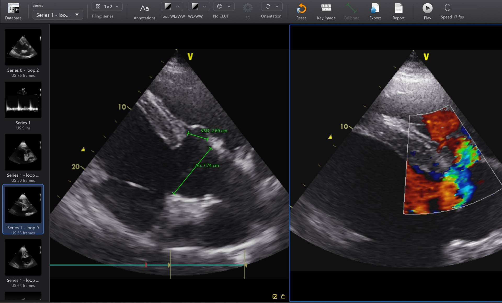
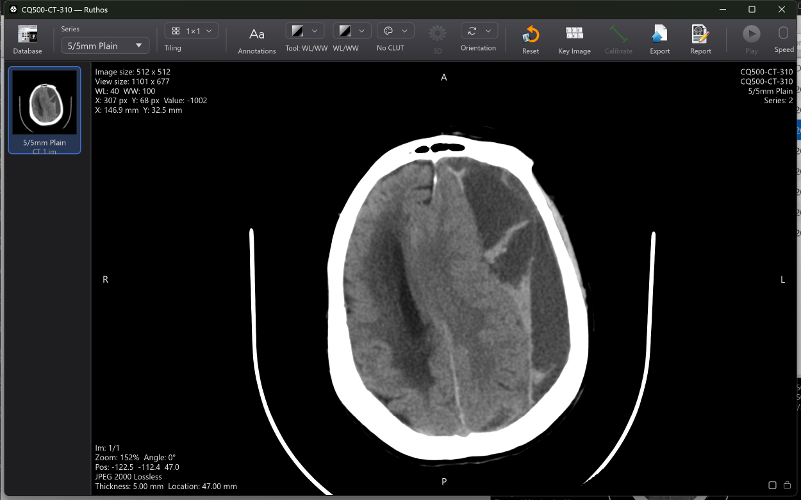

The Horos workflow, on Windows.
Ruthos is a free DICOM viewer and patient archive inspired by Horos and written in Rust. The database window, the 2D viewer, the tools and the corner annotations work the way a Horos user expects, in one small native program with a modern GPU renderer. It is built first for veterinary practice and teaching, from equine echocardiography to digital radiography.

What it does today
An archive that receives from your modalities, talks to your PACS, and a viewer that does the everyday work. The full list, and what is not done yet, is in the release notes.
Patient archive
Import folders, files or drag-and-drop. A DICOM listener files what modalities send. Albums, smart albums, search, filters, thumbnails and a preview pane, as in Horos.
PACS without a PhD
Set up a PACS from a preset and test it in one click. Query and retrieve by study or series, send from the database, and route arriving studies on automatically. Errors say what to change.
GPU viewer
Window and level, the Horos colour tables, zoom, pan, rotate, flip, cine at the file's frame rate, and tiling of a series or of a whole study with per-cell locks.
Codecs
Uncompressed, RLE, JPEG baseline, 12-bit and lossless, JPEG-LS and JPEG 2000, and files without a DICOM meta header.
One caliper for 2D, M-mode and Doppler
Distance in 2D, depth and time in M-mode, time, velocity and slope in spectral Doppler, all from the scale the scanner records. Name a measurement RR interval, PHT or VSD and the right quantity is stored.
Reports
A report per study with named measurements, the LV M-mode block, calculations, findings and key images, exported to PDF.
MPR
Axial, coronal, sagittal and oblique planes through a CT, MR or cone-beam series, linked by a crosshair, with thick slabs, measuring tools and saving planes back to the study.
3D and cutting
GPU volume rendering beside the slices, with presets, MIP and MinIP. Build a box or a path, check it from any side, then cut. Click the table to remove it. A derived picture: the slices remain the reference.
Segments and fragments
Threshold, region grow, islands and morphology, coloured on the slices and in 3D, each with its volume. Split a fracture into pieces and export each as STL, for planning and education.
AI segmentation on your machine
Click a structure and SAM 2.1 finds it and follows it through the stack. An optional download on Windows, shown with its licence first. No image leaves the computer. It was not trained on veterinary images, so every result is checked against the slices.
Guided review
Follow an educator through a teaching case on your own copy of the images, with hand-over of control. Ruthos includes no server: one comes from your educator or institution.
Dial control
On Windows, a Surface Dial or an ASUS ProArt DialPad steps frames and slices and fine-tunes window, level and measurement points, with keyboard shortcuts for everything.
Moving from Horos
Import a whole Horos or OsiriX library with its albums, comments, status and key images. Watch folders bring in new files from modalities automatically.
Teaching copies
Anonymisation by allowlist with derived identifiers, shifted dates and reviewed pixel masks, checked by an independent verification pass before anything is written.
Built for echocardiography and radiography
The measurement tools are designed for veterinary echocardiography and radiography, and they say plainly how far each number can be trusted.
Calibrated from the scanner
Ultrasound measurements use the physical scale the scanner records for each region of the image: centimetres in the 2D sector, depth and time in an M-mode strip, velocity and time in a spectral Doppler strip, with the Doppler baseline. A line that crosses two regions is refused, and every value says where its scale came from.
Measurements can be named from your own sets (LV M-mode, 2D echo, radiography, orthopaedics) and carried into the report.


LV dimensions, areas and editing
The LV tool takes four points along one line, in M-mode or 2D, and gives IVS, LVID, LVFW and fractional shortening, for as many cycles as you measure, with the mean in the report. Rectangle, ellipse and polygon areas work on colour images. Every point can be dragged anywhere, nudged a pixel at a time, or undone, with a magnified loupe while you place it.
Cobb and two-line angles, open polygons, pencil and brush regions, text notes, ROI Manager and ROI Info, histograms and line plots, and movies of a loop for teaching. A library of definitions and calculations (Teichholz volumes, LA/Ao, E/A, peak gradients, heart rate, MVA by pressure half-time, VHS) can be edited, shared as a file and imported by colleagues.
Download
Ruthos is in alpha: it works end to end on real studies and is rough in places. Keep your original files; the archive format may change before version 1.0.
| Platform | Status | Get it |
|---|---|---|
| Windows 10 (1809) and 11, 64-bit (x86-64) | 0.1.6-alpha available | Ruthos-0.1.6-alpha-win64.zip (15 MB) · SHA256SUMS.txt · all releases |
| macOS 11 and later, Apple Silicon and Intel | In preparation; the code already builds and tests on macOS | Not yet |
| Linux, 64-bit | Builds and tests in CI; community supported | Build from source |
Install
- Download Ruthos-0.1.6-alpha-win64.zip and unzip it anywhere.
- Releases are not code-signed yet, so Windows SmartScreen may say it protected your PC: choose More info, then Run anyway. A PC with Smart App Control switched on will refuse it until signed releases begin.
- Run
ruthos.exe. Nothing is installed and no administrator rights are needed. - To receive from a modality, turn the listener on in Preferences > Listener (AE title RUTHOS, port 11112) and allow Ruthos through Windows Firewall.
Uninstall
- Quit Ruthos and delete the folder you unzipped.
- To remove the archive too, delete
%LOCALAPPDATA%\Ruthos. This deletes every imported study; export what you need first. - Settings are in
%APPDATA%\Ruthos; delete that folder as well.
Verify a download
Every release lists SHA-256 checksums in SHA256SUMS.txt, and each file carries a GitHub build-provenance attestation recording the commit and workflow that built it.
gh attestation verify Ruthos-0.1.6-alpha-win64.zip --repo Ruthos/Ruthos64
Graphics: GPU-powered viewing
Ruthos draws every image on the graphics processor. Window and level, colour tables, zoom and cine all run on the GPU, so long echo loops and large CT series stay smooth on ordinary clinic hardware.
What it runs on
Any DirectX 12, Vulkan or OpenGL graphics device: dedicated NVIDIA, AMD and Intel Arc cards, and the integrated graphics in Intel and AMD processors from roughly 2015 on. A recent integrated GPU is enough for echo loops and radiographs.
Which GPU it picks
On a laptop with two GPUs, Ruthos chooses the dedicated one automatically, using DirectX 12 where it can. The adapter it chose is written at the top of ruthos.log in the data folder.
When it matters
Playing two or more echo loops at once, tiling many images, and large CT, MR or CBCT series benefit most from a dedicated GPU. A single radiograph or one loop is light work for any device.
No GPU or a broken driver
Ruthos falls back to Windows' built-in software renderer, which works anywhere but is slower. If it will not start, update the graphics driver first; the error dialog says what failed.
Recommended
| Processor | 64-bit (x86-64), 4 cores or more |
|---|---|
| Memory | 8 GB; 16 GB for large CT or several long loops at once |
| Graphics | DirectX 12 capable; a dedicated GPU with 4 GB for heavy use |
| Display | 1920 × 1080 or higher |
| System | Windows 10 version 1809 or later, or Windows 11 |
Troubleshooting
- Laptop using the wrong GPU. In Windows Settings > System > Display > Graphics, add
ruthos.exeand set it to High performance. - Blank or flickering windows. Update the graphics driver from NVIDIA, AMD or Intel rather than through Windows Update.
- Remote desktop or a virtual machine. These often have no usable GPU; start Ruthos with the environment variable
RUTHOS_RENDERER=software. - Force a graphics API.
WGPU_BACKEND=dx12,vulkanorgllimits Ruthos to one, for testing a driver problem.
Code signing policy
Free code signing on Windows is provided by SignPath.io, with a certificate by the SignPath Foundation. macOS builds are signed with an Apple Developer ID and notarised by Apple.
Every signed release is built from this repository by the release workflow on GitHub-hosted runners, from a tagged commit. Each release carries SHA256 checksums and a GitHub build-provenance attestation; verify a download with gh attestation verify <file> --repo Ruthos/Ruthos64.
Team roles:
- Committers and reviewers: Mark Bowen
- Approvers of signing requests: Mark Bowen
Code signing is not set up yet: current alpha releases are unsigned, so Windows SmartScreen warns on first run and Smart App Control refuses them. Signed builds through the SignPath Foundation follow once the project is accepted.
Privacy
Ruthos does not transmit any data to its developers or to third parties. It makes network connections only when the user configures them or asks for them: the DICOM listener, which is off by default and accepts only devices the user has listed; DICOM connections the user initiates; a guided review server the user chooses to join, which receives the view state of a teaching copy and the participant's name; and the optional AI model, fetched once on request. AI segmentation runs on the user's own computer, and no image data leaves it.
Relationship to Horos
Horos is the free DICOM viewer many veterinary practices rely on, and it runs only on macOS. Ruthos is not a port: Horos is built on Apple's frameworks, so Ruthos re-implements its feature set and interface in Rust and follows its design decisions wherever there is no strong reason not to. Ruthos uses the same licence as Horos, LGPL-3.0, and Horos toolbar artwork under that licence.